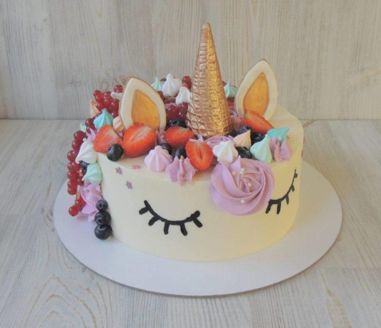
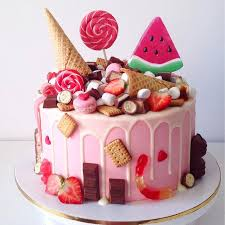
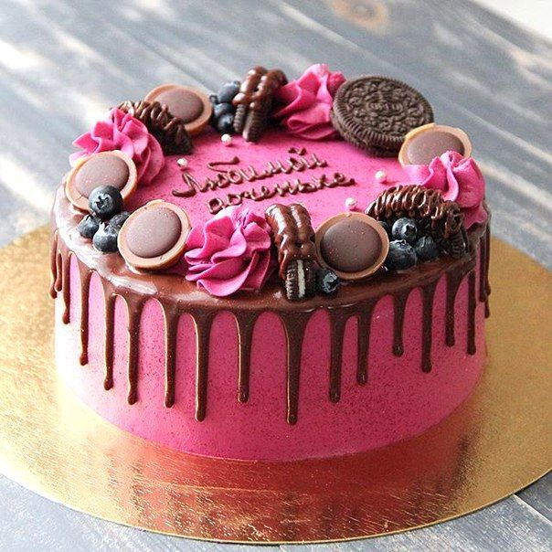
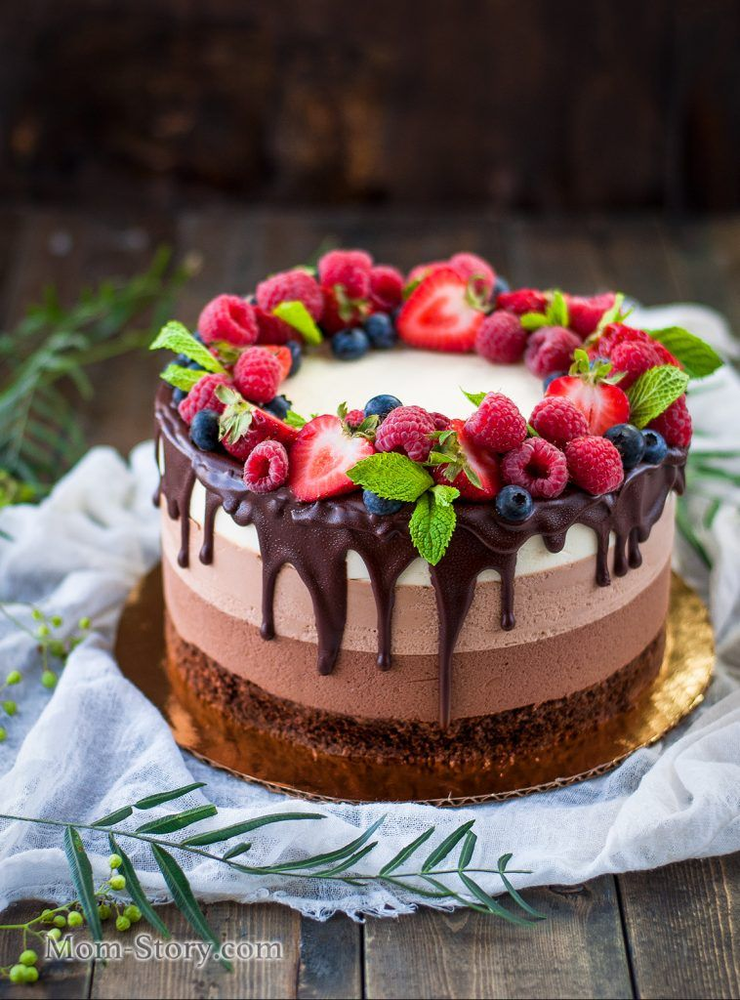

|
|
|||||||
|
  
|
«…И вот в самый разгар праздника появляется ОН. Гости замирают в восхищении, гадая, что же скрывается за разноцветным кремовым фасадом. Влажный ванильный бисквит, воздушная меренга, а быть может шоколад с дерзкими нотками коньяка? И каждый уже успел присмотреть себе кусочек: этот с коктейльной вишней или тот, где больше соленой карамели…» Мы не просто готовим торты на заказ, мы создаем сказку. Мы хотим, чтобы важные даты вашей жизни оставляли только самые сладкие воспоминания. Именно поэтому каждый торт для нас – это предмет искусства, и к его созданию мы подходим с ответственностью и вдохновением.
Широкий выбор начинок. Проверенная классика и авторские кондитерские разработки – вы обязательно найдете свой вкус среди этого разнообразия.
Если вы планируете заказать многоярусный торт, нужно учесть важный нюанс. Воздушные и нежные начинки нельзя размещать на нижних ярусах,
они попросту просядут под весом верхней части. Для одноярусных тортиков ограничений нет – вы можете выбрать самую легкую и пористую начинку. |
||||||